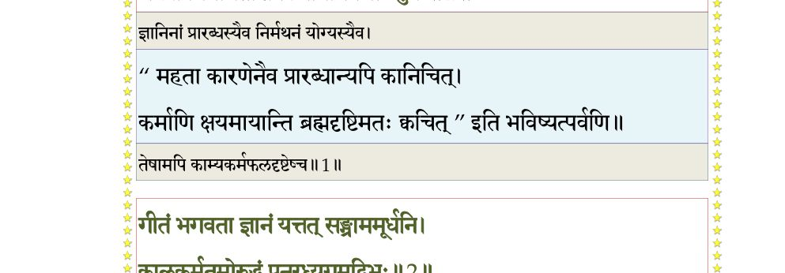
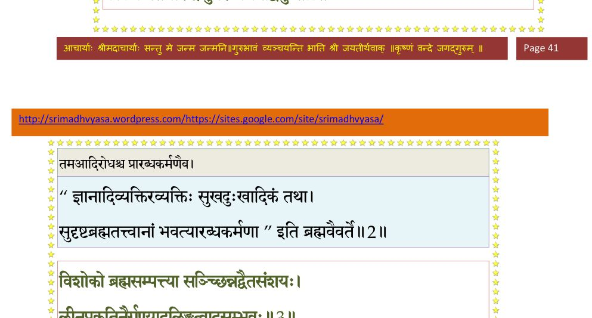
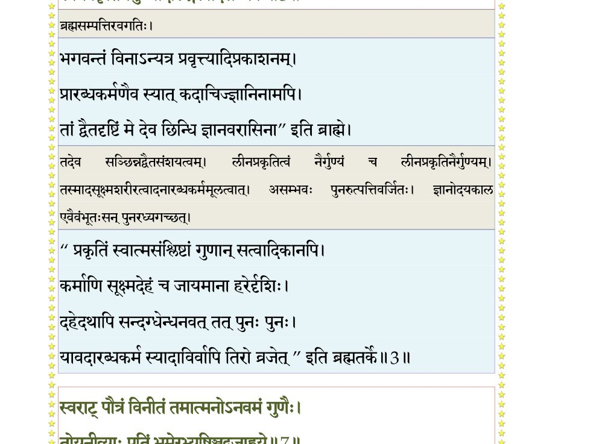
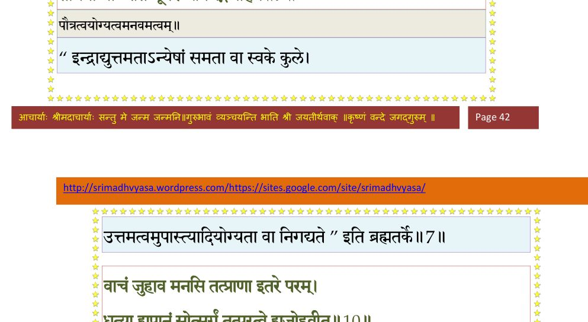
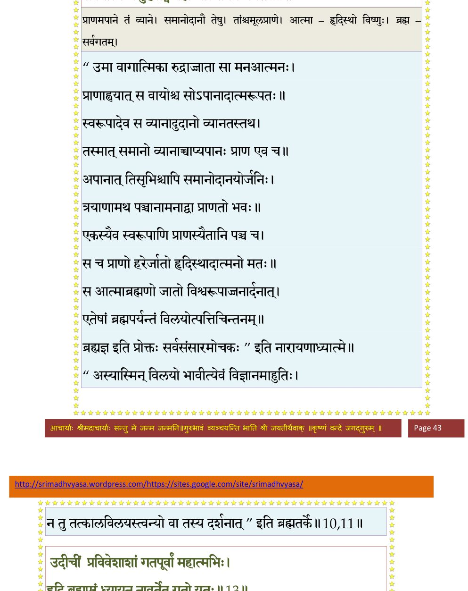
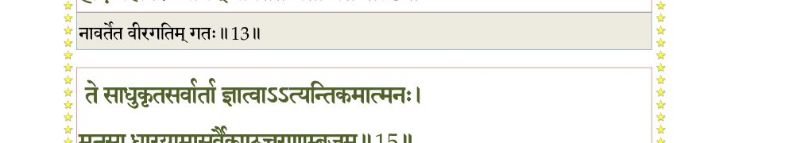
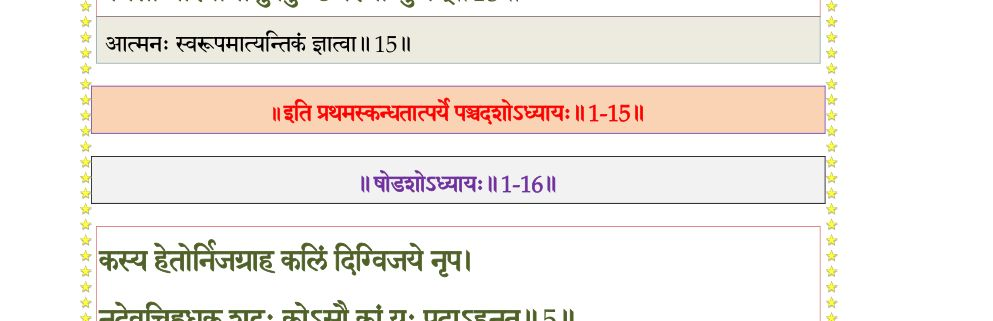

स्कन्ध 1 · अध्याय 15
श्लोक १
सूत उवाच–
वासुदेवाङ्घ्र्यभिध्यानपरिबृंहितरंहसा ।
भक्त्या निर्मथिताशेषकषायधिषणोऽर्जुनः।। १ ।।
वासुदेवाङ्घ्र्यभिध्यानपरिबृंहितरंहसा ।
भक्त्या निर्मथिताशेषकषायधिषणोऽर्जुनः।। १ ।।
भागवततात्पर्यनिर्णय

श्लोक २
गीतं भगवता ज्ञानं यत्तत्संग्राममूर्धनि ।
कालकर्मतमोरुद्धं पुनरध्यगमद्विभुः।। २ ।।
कालकर्मतमोरुद्धं पुनरध्यगमद्विभुः।। २ ।।
भागवततात्पर्यनिर्णय

श्लोक ३
विशोको ब्रह्मसम्पत्या सञ्च्छिन्नद्वैतसंशयः ।
लीनप्रकृतिनैर्गुण्यादलिङ्गत्वादसंभवः।। ३ ।।
लीनप्रकृतिनैर्गुण्यादलिङ्गत्वादसंभवः।। ३ ।।
भागवततात्पर्यनिर्णय

श्लोक ४
निशम्य भगवन्मार्गं संस्थां यदुकुलस्य च ।
स्वःपथाय मतिं चक्रे निवृत्तात्मा युधिष्ठिरः।। ४ ।।
स्वःपथाय मतिं चक्रे निवृत्तात्मा युधिष्ठिरः।। ४ ।।
श्लोक ५
यदा मुकुन्दो भगवानिमां महीं जहौ स्वतन्वा श्रवणीयसत्कथः ।
तदा हरावप्रतिबुद्धचेतसामभद्रहेतुः कलिरन्ववर्तत।। ५ ।।
तदा हरावप्रतिबुद्धचेतसामभद्रहेतुः कलिरन्ववर्तत।। ५ ।।
श्लोक ६
युधिष्ठिरस्तत्परिसर्पणं बुधः पुरे च राष्ट्रे च गृहे तथात्मनि ।
विभाव्य लोभानृतजिह्महिंसनाद्यधर्मचक्रं गमनाय पर्यधात्।। ६ ।।
विभाव्य लोभानृतजिह्महिंसनाद्यधर्मचक्रं गमनाय पर्यधात्।। ६ ।।
श्लोक ७
स्वराट् पौत्रं विनीतं तमात्मनोऽनवमं गुणैः ।
तोयनीव्याः पतिं भूमेरभ्यषिञ्चद्गजाह्वये।। ७ ।।
तोयनीव्याः पतिं भूमेरभ्यषिञ्चद्गजाह्वये।। ७ ।।
भागवततात्पर्यनिर्णय

श्लोक ८
मधुरायां ततो वज्रं शूरसेनपतिं ततः ।
प्राजापत्यां निरूप्येष्टिमग्नीनपिबदीश्वरः।। ८ ।।
प्राजापत्यां निरूप्येष्टिमग्नीनपिबदीश्वरः।। ८ ।।
श्लोक ९
विसृज्य तत्र तत्सर्वं दुकूलवलयादिकम् ।
निर्ममो निरहङ्कारः सञ्च्छिन्नाशेषबन्धनः।। ९ ।।
निर्ममो निरहङ्कारः सञ्च्छिन्नाशेषबन्धनः।। ९ ।।
श्लोक १०
वाचं जुहाव मनसि तत्प्राण इतरे परम् ।
धृत्या ह्यपानं सोत्सर्गं तत्परत्वे ह्यजोहवीत्।। १० ।।
धृत्या ह्यपानं सोत्सर्गं तत्परत्वे ह्यजोहवीत्।। १० ।।
भागवततात्पर्यनिर्णय
श्लोक ११
त्रित्वे हुत्वाऽथ पञ्चत्वं तच्चैकत्वेऽजुहोन्मुनिः ।
सर्वमात्मन्यजुहवीद्ब्रह्मण्यात्मानमव्यये।। ११ ।।
सर्वमात्मन्यजुहवीद्ब्रह्मण्यात्मानमव्यये।। ११ ।।
भागवततात्पर्यनिर्णय

श्लोक १२
चीरवासा निराहारो बद्धवाङ्मुक्तमूर्धजः ।
दर्शयन्नात्मनो रूपं जडोन्मत्तपिशाचवत् ।
अनपेक्षमाणो निरगादशृृण्वन् बधिरो यथा।। १२ ।।
दर्शयन्नात्मनो रूपं जडोन्मत्तपिशाचवत् ।
अनपेक्षमाणो निरगादशृृण्वन् बधिरो यथा।। १२ ।।
श्लोक १३
उदीचीं प्रविवेशाशां गतपूर्वां महात्मभिः ।
हृदि ब्रह्म परं ध्यायन्नावर्तेत गतो यतः।। १३ ।।
हृदि ब्रह्म परं ध्यायन्नावर्तेत गतो यतः।। १३ ।।
भागवततात्पर्यनिर्णय

श्लोक १४
सर्वे तमनु निर्जग्मुर्भ्रातरः कृतनिश्चयाः ।
कलिनाऽधर्ममिश्रेण दृष्ट्वा स्पृष्टाः प्रजा भुवि।। १४ ।।
कलिनाऽधर्ममिश्रेण दृष्ट्वा स्पृष्टाः प्रजा भुवि।। १४ ।।
श्लोक १५
ते साधुकृतसर्वार्थाः ज्ञात्वाऽऽत्यन्तिकमात्मनः ।
मनसा धारयामासुर्वैकुण्ठचरणाम्बुजम्।। १५ ।।
मनसा धारयामासुर्वैकुण्ठचरणाम्बुजम्।। १५ ।।
भागवततात्पर्यनिर्णय

श्लोक १६
तद्ध्यानोद्रिक्तया भक्त्या विशुद्धधिषणाः परे ।
तस्मिन्नारायणपद एकान्तमतयोऽपतन्।। १६ ।।
तस्मिन्नारायणपद एकान्तमतयोऽपतन्।। १६ ।।
श्लोक १७
अवापुर्दुरवापं ते असद्भिर्विषयात्मभिः ।
विधूतकल्मषं स्थानं विरजेनात्मनैव हि।। १७ ।।
विधूतकल्मषं स्थानं विरजेनात्मनैव हि।। १७ ।।
श्लोक १८
द्रौपदी च तदाज्ञाय पतीनामनपेक्षताम् ।
वासुदेवे भगवति एकान्तमतिरापतत्।। १८ ।।
वासुदेवे भगवति एकान्तमतिरापतत्।। १८ ।।
।। इति श्रीमद्भागवते प्रथमस्कन्धे पञ्चदशोऽध्यायः ।।